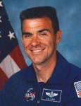

Lyndon B. Johnson Space Center
Houston, Texas 77058
|
National Aeronautics and Space Administration Lyndon B. Johnson Space Center Houston, Texas 77058 |
 |
Biographical Data |
||
DUANE G. DIGGER CAREY (LIEUTENANT COLONEL, USAF)
NASA ASTRONAUT (FORMER)
PERSONAL DATA: Born April 30, 1957 in St. Paul, Minnesota. Married to the former Cheryl Ann Tobritzhofer of St. Paul, Minnesota. They have two children. He enjoys motorcycle travel, racing motocross, camping, home-schooling his children, and reading science fiction. His parents reside in Minneapolis, Minnesota. Her mother resides in St. Paul Minnesota. Her father is deceased.
EDUCATION: Graduated from Highland Park High School, St. Paul, Minnesota in 1975; received a Bachelor of Science degree in Aerospace Engineering and Mechanics and a Master of Science degree in Aerospace Engineering from the University of Minnesota-Minneapolis in 1981 and 1982, respectively.
ORGANIZATIONS: National Space Society, American Motorcyclist Association, Air Force Association.
SPECIAL HONORS: Awarded the Distinguished Flying Cross and three Air Medals. The American Motorcyclist Association Hazel Kolb Brighter Image Award.
EXPERIENCE: Carey received his commission from the Reserve Officer Training Corps in 1981 and graduated from Undergraduate Pilot Training in 1983. He flew the A-10A during tours at England Air Force Base, Louisiana, and Suwon Air Base, Republic of Korea. He completed F-16 training in 1988 and was assigned to Torrejon Air Base, Spain. In 1991, he was selected to attend the United States Air Force Test Pilot School at Edwards Air Force Base, California. After graduation in 1992, he worked as an F-16 experimental test pilot and System Safety Officer at Edwards Air Force Base. He has logged over 4300 hours in more than 35 types of aircraft.
NASA EXPERIENCE: Carey was selected as an astronaut candidate by NASA in April 1996. He reported to the NASA Johnson Space Center in August 1996. Having completed two years of training and evaluation, he qualified for flight assignment as a pilot. Initially, Carey was initially assigned technical duties in the Astronaut Office Spacecraft Systems/Operations Branch and later on served as a Shuttle CAPCOM in Mission Control. In 2002 he served as pilot on STS-109. In completing his first space flight, Carey logged over 10 days in space. He left NASA in 2004 to pursue other interests.
SPACE FLIGHT EXPERIENCE: STS-109 Columbia (March 1-12, 2002). STS-109 was the fourth Hubble Space Telescope (HST) servicing mission. The crew of STS-109 successfully upgraded the Hubble Space Telescope leaving it with a new power unit, a new camera and new solar arrays. HST servicing and upgrade was accomplished by four crewmembers during a total of 5 EVAs in 5 consecutive days. The space walkers were assisted by crewmates inside Space Shuttle Columbia. Carey also helped document the EVA activities with video and still images. STS-109 orbited the Earth 165 times, and covered 3.9 million miles in over 262 hours.
OCTOBER 2004
{kind=link}